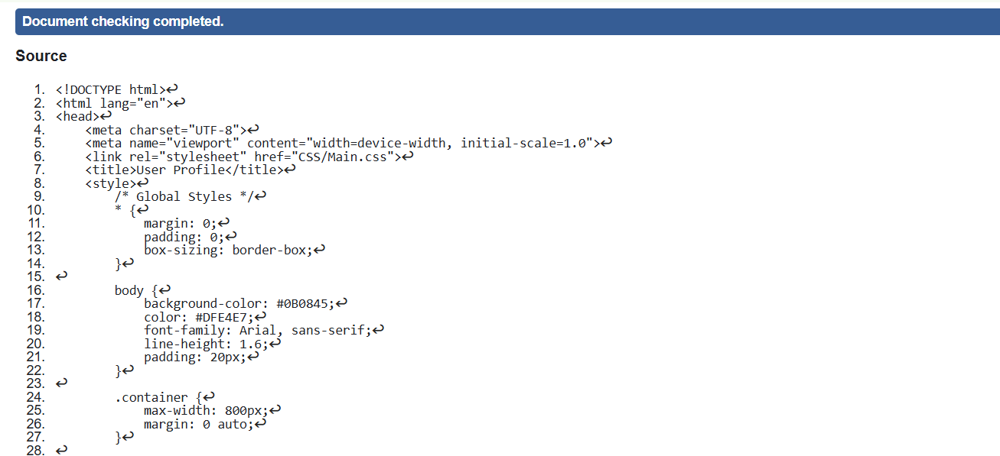
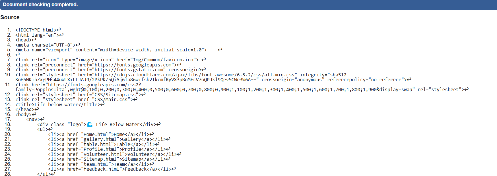
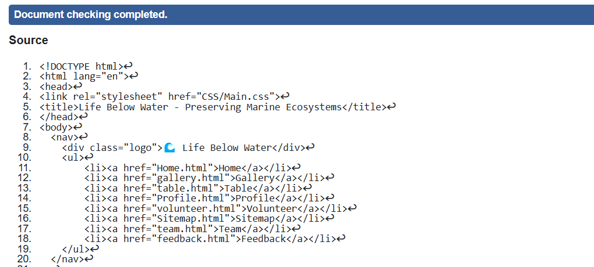

User Profile Page Validation Report
The validation process revealed that the User Profile Page is generally well-structured and user-friendly. However, there are opportunities for improvement, particularly in terms of form field labels, keyboard navigation, and error messaging. Enhancing these areas will ensure better accessibility for users with disabilities, making the page more inclusive. These adjustments will align the page with WCAG standards, improving overall user experience.
Back to Page Editor page
Site Map Page Validation Report
The Site Map Page is easy to navigate and provides a clear overview of the website’s structure. However, some minor accessibility improvements, such as adding ARIA landmarks, ensuring proper color contrast, and improving keyboard navigation, would make it more accessible for all users, including those with disabilities. These improvements will ensure that the page complies with WCAG and other accessibility guidelines for an inclusive user experience.
Back to Page Editor page
Content Page validation report
The Content Page is well-structured and visually appealing, with strong semantic elements. However, minor accessibility enhancements—such as ARIA landmarks, better heading hierarchy, and improved readability—can make the page more user-friendly and inclusive. These refinements will ensure compliance with web accessibility standards (WCAG & W3C), improving usability for all users.
